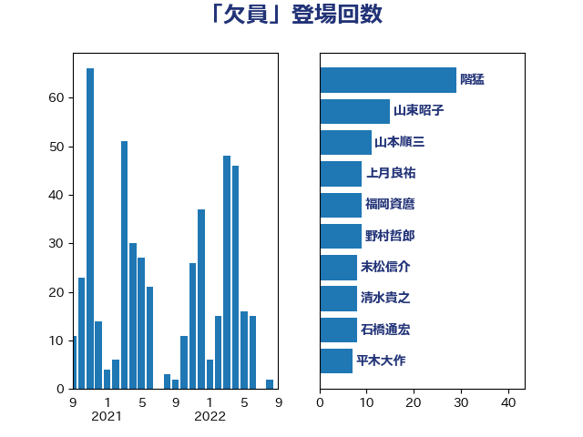

単語「欠員」

| 階猛 | 立憲民主党 | 29 回 |
| 山東昭子 | 自由民主党 | 15 回 |
| 山本順三 | 自由民主党 | 11 回 |
| 上月良祐 | 自由民主党 | 9 回 |
| 福岡資麿 | 自由民主党 | 9 回 |
| 野村哲郎 | 自由民主党 | 9 回 |
| 末松信介 | 自由民主党 | 8 回 |
| 清水貴之 | 日本維新の会 | 8 回 |
| 石橋通宏 | 立憲民主党 | 8 回 |
| 平木大作 | 公明党 | 7 回 |
| 上野賢一郎 | 自由民主党 | 6 回 |
| 佐藤信秋 | 自由民主党 | 6 回 |
| 山本香苗 | 公明党 | 6 回 |
| 斎藤嘉隆 | 立憲民主党 | 6 回 |
| 田村智子 | 日本共産党 | 6 回 |
| 矢倉克夫 | 公明党 | 6 回 |
| 吉田忠智 | 立憲民主党 | 5 回 |
| 徳永エリ | 立憲民主党 | 5 回 |
| 野田国義 | 立憲民主党 | 5 回 |
| 長浜博行 | 無所属 | 5 回 |
| 馬場成志 | 自由民主党 | 5 回 |
| 吉良よし子 | 日本共産党 | 4 回 |
| 太田房江 | 自由民主党 | 4 回 |
| 松村祥史 | 自由民主党 | 4 回 |
| 米山隆一 | 立憲民主党 | 4 回 |
| 豊田俊郎 | 自由民主党 | 4 回 |
| 長峯誠 | 自由民主党 | 4 回 |
| 鶴保庸介 | 自由民主党 | 4 回 |
| 嘉田由紀子 | 無所属 | 3 回 |
| 大塚耕平 | 国民民主党 | 3 回 |
| 宮沢洋一 | 自由民主党 | 3 回 |
| 山谷えり子 | 自由民主党 | 3 回 |
| 掘井健智 | 日本維新の会 | 3 回 |
| 東徹 | 日本維新の会 | 3 回 |
| 枝野幸男 | 立憲民主党 | 3 回 |
| 森屋宏 | 自由民主党 | 3 回 |
| 水岡俊一 | 立憲民主党 | 3 回 |
| 片山大介 | 日本維新の会 | 3 回 |
| 室井邦彦 | 日本維新の会 | 2 回 |
| 山田宏 | 自由民主党 | 2 回 |
| 根本匠 | 自由民主党 | 2 回 |
| 森英介 | 自由民主党 | 2 回 |
| 橋本岳 | 自由民主党 | 2 回 |
| 浜田靖一 | 自由民主党 | 2 回 |
| 福重隆浩 | 公明党 | 2 回 |
| 義家弘介 | 自由民主党 | 2 回 |
| 若宮健嗣 | 自由民主党 | 2 回 |
| 金子恭之 | 自由民主党 | 2 回 |
| 金子恵美 | 立憲民主党 | 2 回 |
| 高木毅 | 自由民主党 | 2 回 |
| あかま二郎 | 自由民主党 | 1 回 |
| あべ俊子 | 自由民主党 | 1 回 |
| 上田清司 | 国民民主党 | 1 回 |
| 中島克仁 | 立憲民主党 | 1 回 |
| 中根一幸 | 自由民主党 | 1 回 |
| 井上信治 | 自由民主党 | 1 回 |
| 伊藤忠彦 | 自由民主党 | 1 回 |
| 佐々木さやか | 公明党 | 1 回 |
| 加藤勝信 | 自由民主党 | 1 回 |
| 勝部賢志 | 立憲民主党 | 1 回 |
| 原口一博 | 立憲民主党 | 1 回 |
| 古屋範子 | 公明党 | 1 回 |
| 城内実 | 自由民主党 | 1 回 |
| 塩川鉄也 | 日本共産党 | 1 回 |
| 大口善徳 | 公明党 | 1 回 |
| 大塚拓 | 自由民主党 | 1 回 |
| 大野敬太郎 | 自由民主党 | 1 回 |
| 尾辻秀久 | 無所属 | 1 回 |
| 川合孝典 | 国民民主党 | 1 回 |
| 川田龍平 | 立憲民主党 | 1 回 |
| 平口洋 | 自由民主党 | 1 回 |
| 志位和夫 | 日本共産党 | 1 回 |
| 新妻秀規 | 公明党 | 1 回 |
| 木原誠二 | 自由民主党 | 1 回 |
| 林芳正 | 自由民主党 | 1 回 |
| 棚橋泰文 | 自由民主党 | 1 回 |
| 森山浩行 | 立憲民主党 | 1 回 |
| 江田憲司 | 立憲民主党 | 1 回 |
| 渡海紀三朗 | 自由民主党 | 1 回 |
| 牧山ひろえ | 立憲民主党 | 1 回 |
| 田嶋要 | 立憲民主党 | 1 回 |
| 石原宏高 | 自由民主党 | 1 回 |
| 福田昭夫 | 立憲民主党 | 1 回 |
| 稲富修二 | 立憲民主党 | 1 回 |
| 竹谷とし子 | 公明党 | 1 回 |
| 簗和生 | 自由民主党 | 1 回 |
| 細田博之 | 自由民主党 | 1 回 |
| 菅義偉 | 自由民主党 | 1 回 |
| 菊田真紀子 | 立憲民主党 | 1 回 |
| 萩生田光一 | 自由民主党 | 1 回 |
| 赤羽一嘉 | 公明党 | 1 回 |
| 越智隆雄 | 自由民主党 | 1 回 |
| 道下大樹 | 立憲民主党 | 1 回 |
| 金田勝年 | 自由民主党 | 1 回 |
| 鈴木義弘 | 国民民主党 | 1 回 |
| 鈴木馨祐 | 自由民主党 | 1 回 |
| 長谷川岳 | 自由民主党 | 1 回 |
| 関芳弘 | 自由民主党 | 1 回 |
| 阿部弘樹 | 日本維新の会 | 1 回 |
| 阿部知子 | 立憲民主党 | 1 回 |
| 馬淵澄夫 | 立憲民主党 | 1 回 |
| 高橋千鶴子 | 日本共産党 | 1 回 |
| 高鳥修一 | 自由民主党 | 1 回 |